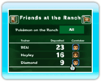

|
17
|
Deposit Details (détails)
|
 |
|
Tu peux voir ici les Pokémon qui sont au Ranch, obtenir des informations sur les Mii et voir une Parade des Pokémon. Tu peux également changer les Pokémon que tu veux voir dans
le Ranch en pointant le bouton Pokémon on the Ranch (Pokémon au
Ranch) et en appuyant sur Qu'est-ce qu'un Mii responsable?
C'est un Mii qui s'occupe des Pokémon amenés au Ranch par un dresseur. Lorsque tu nommes un Mii responsable, lui et les Pokémon seront amicaux les uns envers les autres. Changer le Mii responsable des Pokémon
Dans l'écran Deposit Details (détails), pointe le Mii que tu
veux utiliser et appuie sur
À l'écran de configuration du Mii responsable, pointe le Mii
que tu veux nommer responsable et appuie sur
Si tu veux
choisir un autre Mii que ceux présentés dans l'écran de
configuration du Mii responsable, pointe Select a different Mii
(choisis un autre Mii) et appuie sur Lorsque le choix est fait, pointe Okay and Return (valider
et ressortir) et appuie sur
Lorsque tu effaces un Mii de la Chaîne Mii, ce Mii disparaît du Ranch et un nouveau Mii sera automatiquement désigné responsable. Ajouter un Pokémon dans les
Favorites (mes favoris)
Cette fonction devient disponible lorsque tu ramènes
suffisamment de Pokémon au Ranch. Lorsque tu ajoutes un Pokémon au
Favorites (mes favoris), tu peux choisir de ne voir que tes Pokémon
favoris au Ranch. Pour ajouter un Pokémon aux favoris, pointe
 Parade ParadeLorsque tu pointes le bouton Go to a Parade (parade) et que
tu appuies sur |
 . Tu peux changer la sélection en All (tous), Trainer
(dresseur) ou Favorites (mes favoris).
. Tu peux changer la sélection en All (tous), Trainer
(dresseur) ou Favorites (mes favoris). (étoile) sous son visage est un Mii
responsable.
(étoile) sous son visage est un Mii
responsable.
 à côté
du nom du Pokémon et appuie sur
à côté
du nom du Pokémon et appuie sur 
 |
 |
 |